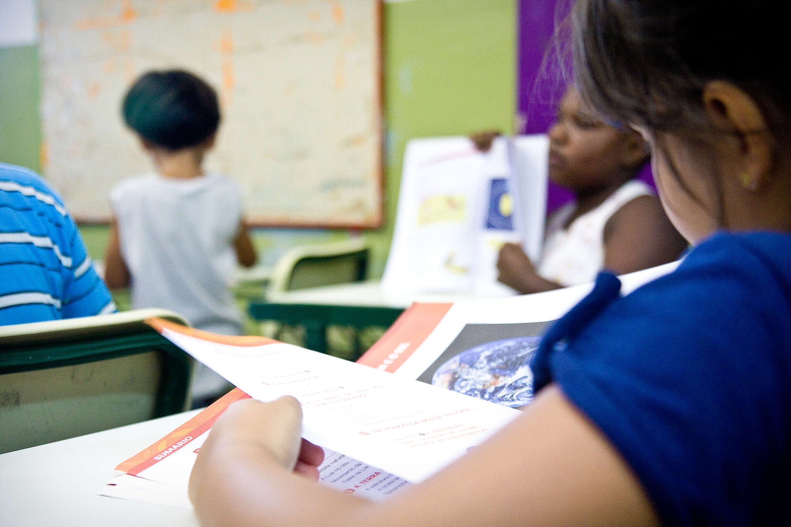
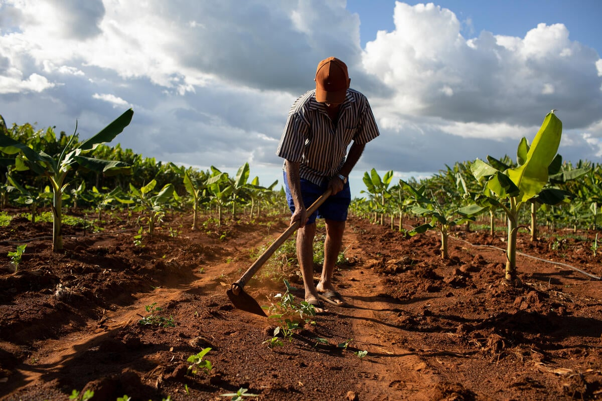
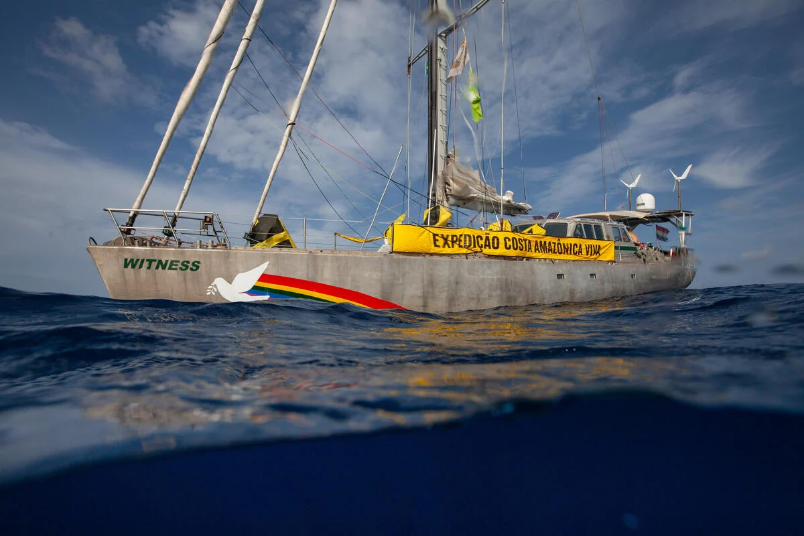

ÚLTIMAS NOTÍCIAS

Dia Nacional da Educação Ambiental: a urgência de levar a pauta climática para as escolas
Está nas mãos do Congresso aprovar uma lei que inclui o tema no currículo escolar
Saiba Mais

“Entre a Vida e o Veneno”: a luta por um futuro sem agrotóxicos
Inspirados no legado do ativista Zé Maria do Tomé, Greenpeace e comunidades do Vale do Jaguaribe, no Ceará, lançam curta-documentário
Saiba Mais

O que os derivadores da Expedição Costa Amazônica Viva nos dizem?
Pesquisa realizada pelo IEPA mostra alcance transfronteiriço de eventual derramamento de petróleo na Bacia da Foz do Amazonas
Saiba Mais